本报告定义「认知副驾」的产品范围与需求基线：明确做什么（功能需求）、做到什么程度（非功能需求）、如何与外部交互（接口需求）、需要管理哪些数据（数据需求），并给出可验证的验收标准与需求追踪关系，作为后续设计、开发、测试与验收的共同依据。
文档修订记录
| 版本 | 日期 | 修订人 | 修订说明 |
|---|---|---|---|
| V1.0 | 2026-09 | 周宇航 | 首版需求分析，确立五层能力梯度（L1–L5）与目标用户画像 |
| V2.0 | 2026-09 | 周宇航 | 三引擎混合架构简化为单一 LLM；功能需求改写为分角色的用例（Use Case）形式 |
| V3.0 | 2026-09 | 周宇航 | 模型供应商由 Anthropic Claude 切换为国产 DeepSeek（deepseek-flash），改为每请求 reasoning 开关切换思考模式 |
| V3.1 | 2026-10-08 | 周宇航 | 补齐系统上下文、总体架构、业务流程、用例、数据实体关系等 14 张图；新增术语与缩略语表、数据字典、需求追踪矩阵、验收标准表；统一小节编号；修正模型层与接入方式的表述 |
一、项目背景
1.1 时代背景与问题提出
在信息过载的时代，知识工作者普遍面临一个困境：收藏了大量文章、保存了海量笔记、划了无数重点，但真正需要调用时却找不到，更谈不上消化吸收。「收藏」这一行为带来的心理安全感，掩盖了知识并未真正转化为个人认知的事实。
1.2 现有方案的局限
以 Notion、Obsidian、Evernote 为代表的传统知识管理工具，本质上是「存储与检索」系统，存在三大固有缺陷：
- 无法处理模糊输入——用户必须输入精准关键词才能命中结果，而人对内容的记忆往往是碎片化、感官化的；
- 无法主动发起行动——系统只能被动响应查询，不能主动提醒、追问、纠偏；
- 无法进行逻辑推理和因果推断——无法发现收藏内容之间的矛盾，更无法基于行为数据诊断学习问题。
1.3 产品提出
「认知副驾」正是为解决上述问题而设计的 AI 智能体产品：通过持续对话与自主推理，帮助用户把「收藏的碎片」转化为「可调用的认知」，并持续修正学习方向。区别于传统工具的「被动存储」定位，认知副驾是一个主动型学习伙伴——它不仅回答问题，还主动发现矛盾、生成追问、监测行为偏离、诊断学习病根。
技术背景：产品全部智能能力基于单一外部大语言模型服务（DeepSeek，模型名 deepseek-flash）提供，通过统一网关接入，不与多厂商混合编排，以降低架构复杂度与不确定性；模型层通过抽象接口封装，保留未来替换或新增服务商的能力。
1.4 术语与缩略语
| 术语 / 缩略语 | 说明 |
|---|---|
| LLM | 大语言模型（Large Language Model）；本产品单一依赖 DeepSeek |
| 智能体（Agent） | 具备感知、推理、规划与行动能力，可自主发起行为的系统；区别于纯问答式对话 |
| L1–L5 | 五级能力梯度：L1 认知挖掘、L2 冲突检测、L3 认知助产、L4 路径自我修正、L5 偏误诊断 |
| Embedding | 文本向量表示，用于语义检索与相似度计算 |
| Function Calling | 模型函数调用机制，用于驱动外部动作 |
| RAG | 检索增强生成（Retrieval-Augmented Generation） |
| Prompt 缓存 | 服务端提示缓存，命中可显著降低输入成本 |
| 误报抑制 | 低置信度过滤 + 用户忽略收敛的组合机制，用于降低打扰 |
| UC | Use Case，用例 |
| AT | Acceptance Test，验收测试项 |
| MVP | 最小可行产品（Minimum Viable Product） |
| 认知闭环 | 诊断 → 计划 → 监测 → 干预 → 再诊断的自进化链路 |
二、项目目标
项目总体目标为：构建一个基于大语言模型的个人知识学习智能体，实现从「知识存储」到「认知转化」的跃迁。具体分解为五项可衡量的子目标：
| 编号 | 目标 | 衡量指标 |
|---|---|---|
| G1 | 将「收藏的碎片」转化为「可调用的认知」 | 模糊检索一次命中率、多轮追问收敛轮数 |
| G2 | 主动发现知识矛盾并提醒 | 冲突检测覆盖新增内容比例、误报率 |
| G3 | 引导用户问「该问没问」的问题 | 认知简报每周推送的追问数 |
| G4 | 计划偏离时自主纠偏 | 行为偏离→干预→路径调整的平均时延 |
| G5 | 定位学习病根并给出方案 | 月度健康报告覆盖用户比例、诊断采纳率 |
三、目标用户
3.1 角色定义
| 角色 | 角色编号 | 说明 |
|---|---|---|
| 学习者 | U1 | 主要交互对象，有收藏 / 笔记习惯的知识工作者或学生 |
| 知识源 | S1 | 外部系统：本地书籍文件、微信读书等阅读平台 |
| 认知副驾系统 | SYS | 自身作为执行者，自主感知、推理、推送 |
3.2 用户画像摘要
| 特征维度 | 描述 |
|---|---|
| 痛点 | 收藏即遗忘、检索靠精确关键词、学习无体系 |
| 诉求 | 主动挖掘、发现矛盾、被提醒、被纠偏、被诊断 |
| 使用频率 | 每日碎片化使用 + 每周 / 每月被动接收简报 |
| 技术能力 | 无需技术背景，纯自然语言交互 |
四、用户痛点分析
| 痛点 | 具体表现 | 根因分析 | 产品对应能力 |
|---|---|---|---|
| 收藏即遗忘 | 收藏夹与笔记库持续膨胀，调用率极低，「存了=学了」的错觉 | 存储行为与认知加工脱节，缺乏后续激活机制 | L1 认知挖掘：模糊意图定位，多轮追问找回内容 |
| 检索依赖精确关键词 | 只记得「橙色封面、讲拖延症」之类的碎片线索，无法检索 | 传统工具基于关键词匹配，不支持语义与模糊输入 | L1：语义向量检索 + LLM 多轮澄清 |
| 知识矛盾无察觉 | 先后收藏的观点相互冲突而不自知，认知持续被污染 | 工具不做内容间关系分析 | L2 冲突检测：主动扫描 + 实时检测 + 误报抑制 |
| 学习无体系、不知问什么 | 大量收藏某类主题却完全忽略关键盲区 | 缺乏对知识结构的全局审视 | L3 认知助产：周认知简报 + 深度追问 |
| 计划执行偏离无纠偏 | 立了学习目标，连续多日未执行也无人提醒 | 计划工具不做行为监测与干预 | L4 路径自我修正：偏离监测 + 干预对话 + 重规划 |
| 学习问题难归因 | 「总学不好、总拖延」，找不到病根 | 缺乏基于行为数据的链式归因分析 | L5 偏误诊断：月度健康报告 + 主动归因诊断 |
五、系统定位
5.1 产品定义
认知副驾是基于大语言模型的个人知识学习智能体，以「主动认知伙伴」而非「被动存储工具」为定位，通过五级递进的智能体主动性（L1→L5）覆盖从「帮用户找回知识」到「帮用户认识自己」的完整价值链。
系统与外部实体的交互关系如下图，它是本报告全部需求的边界依据：方框内为系统职责，方框外为外部交互方。
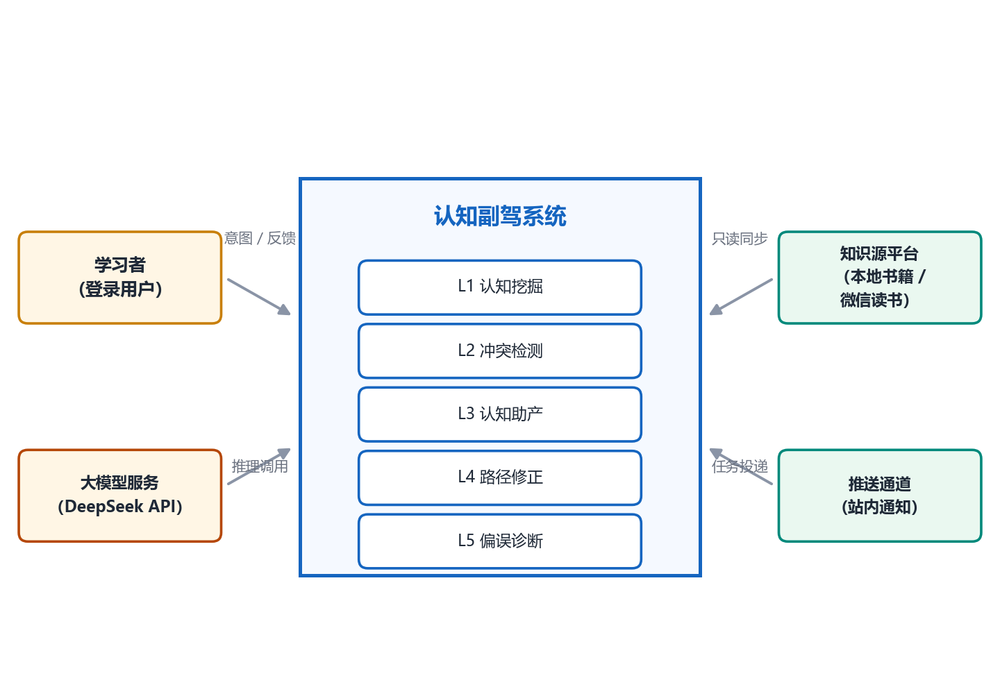
5.2 与传统知识管理工具的对比
| 维度 | 传统工具 | 认知副驾 |
|---|---|---|
| 交互模式 | 关键词检索，被动响应 | 自然语言对话，支持模糊输入与多轮澄清 |
| 主动性 | 零主动，等用户发起 | 主动扫描冲突、主动推送简报、主动干预偏离 |
| 推理能力 | 无 | 语义比对、逻辑分析、因果推断、链式归因 |
| 知识关系 | 孤立条目 | 识别矛盾 / 互补 / 断层关系，含置信度评估 |
| 学习闭环 | 无计划、无监测 | 目标→计划→监测→干预→诊断全闭环 |
5.3 技术与架构定位
- 单一模型依赖：全部智能能力收敛到 DeepSeek API 统一网关，业务层不感知实现细节；通过抽象接口封装保留未来替换 / 新增服务商的能力。
- 运行环境：服务端部署，Python / FastAPI 异步服务；模型层需联网访问 DeepSeek API。
- 用户端：Web 对话工作台为主，功能页为辅；移动端以响应式 Web + PWA 接入。
- 分层结构：用户交互层 / 应用服务层 / 领域能力层 / 数据与模型层四层，模型调用是唯一收口点。
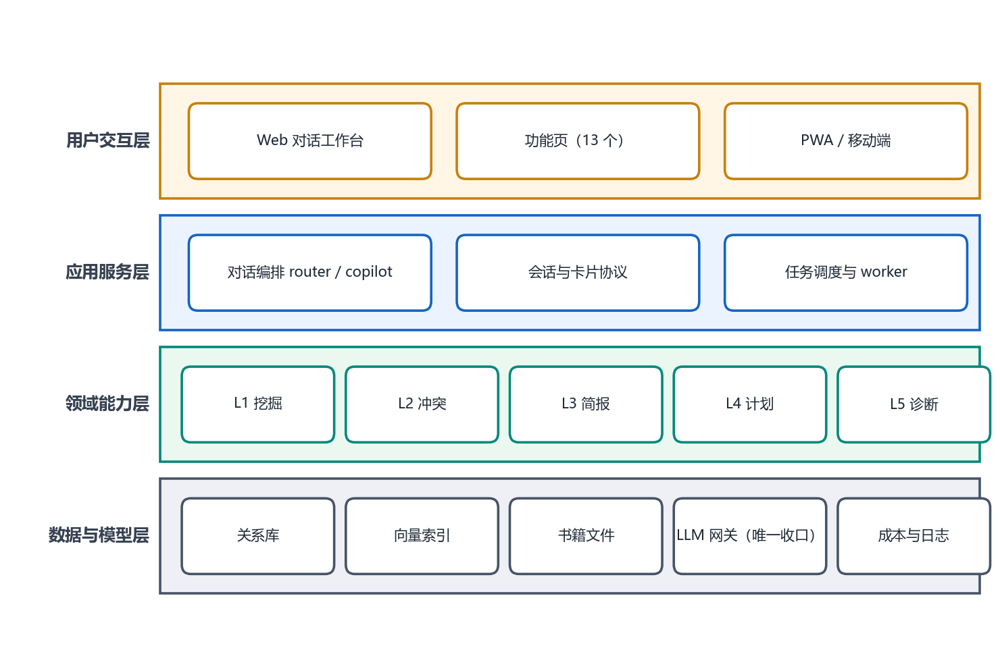
六、业务流程分析
6.1 总体业务主线
知识接入 → 认知加工（向量化 + 主张提取）→ 主动服务（挖掘 / 冲突 / 简报 / 干预 / 诊断）→ 用户反馈 → 闭环修正（计划重规划 / 推荐收敛）。
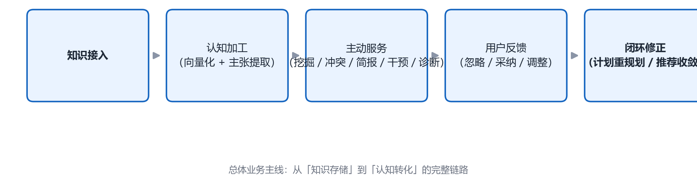
6.2 知识接入流程（UC-G-01）
学习者授权接入知识源（本地书籍文件、微信读书等）→ 系统建立连接并同步原文 → 系统对新条目做向量化与核心主张提取（超大条目分块处理）→ 回传同步结果。连接失败可重试，不阻塞已有数据。
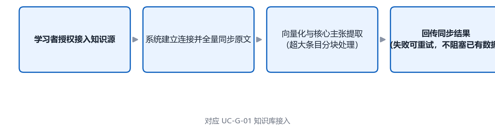
6.3 模糊检索定位流程（UC-L1-01，L1）
学习者输入碎片化线索（如「橙色封面，好像是讲拖延症的」）→ 系统解析产生多个候选匹配假设 → 候选不唯一时发起多轮追问 → 学习者回答缩小范围 → 循环直至定位 → 返回精准内容并附阅读历史提醒。假设唯一时直接交付；学习者无法回答时按最近相似度兜底返回。
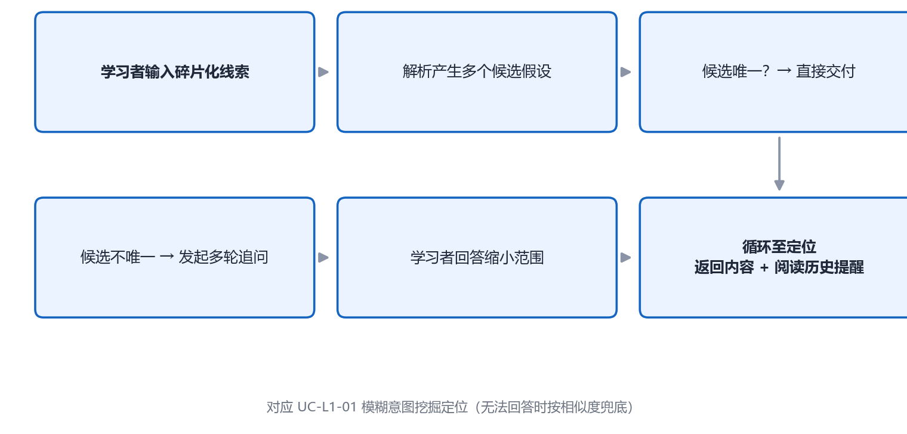
6.4 冲突检测流程（UC-L2-01/02/03，L2）
两条触发路径：①每周定时主动扫描新增条目；②新文章收藏时实时检测。处理流程：提取核心主张 → 语义比对与逻辑分析 → 识别矛盾 / 互补 / 断层关系并过滤误报（低置信度不入库不推送）→ 形成冲突候选并推送提醒 → 学习者反馈「忽略 / 采纳」→ 反馈用于收敛与信任度量（同类型忽略 ≥3 次自动收敛）。
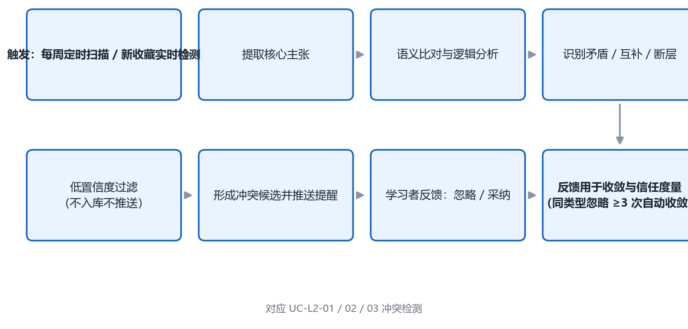
冲突记录的用户状态在三个取值间迁移，收敛与重新激活规则如下图：
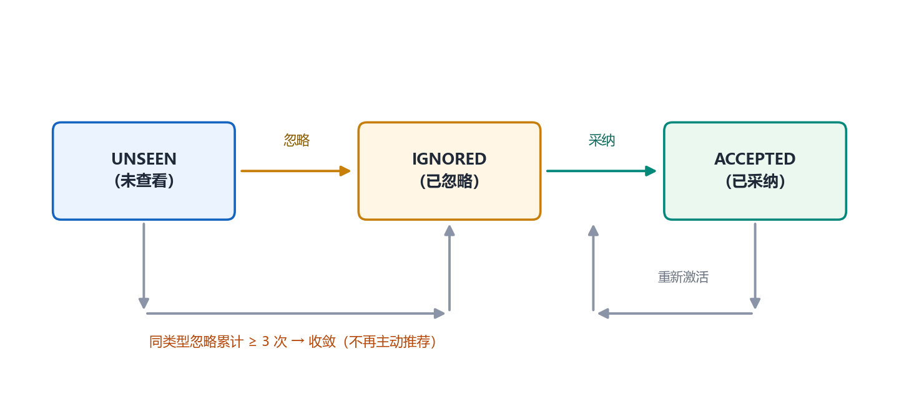
6.5 认知助产流程（UC-L3-01/02，L3）
- 周认知简报：每周定时分析知识库主题分布与认知深度 → 识别「大量存在 / 完全缺失」模式 → 生成 2–3 个启发式深度追问 → 汇总本周冲突 → 推送简报。
- 深度追问：学习者完成问答或收藏新内容后，基于缺失项生成 1 个衔接当前话题的深度问题，附数据依据推送，可承接新一轮对话。
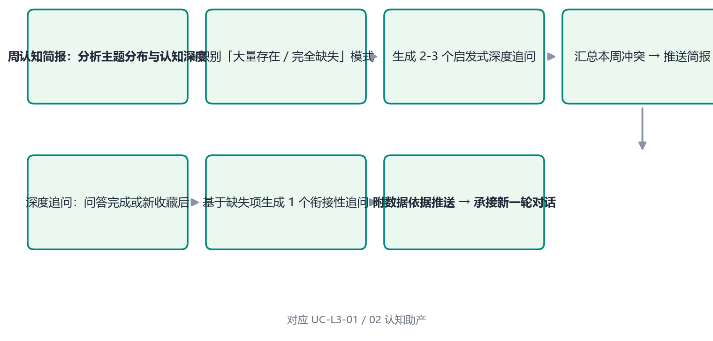
6.6 计划制定与纠偏流程（UC-L4-01/02，L4）
学习者设定学习目标（含期限与优先级）→ 系统拆解为周维度任务计划 → 回传确认 / 修改 → 计划生效进入行为监测。当连续 N 天（默认 3）未执行计划、行为模式显著变化或学习者主动请求时：系统聚合学习行为 → 分析偏离原因 → 生成路径调整建议 → 发起干预对话 → 学习者同意则重拆计划并确认新路径（含预期收益），拒绝则保持原计划并记录偏好。
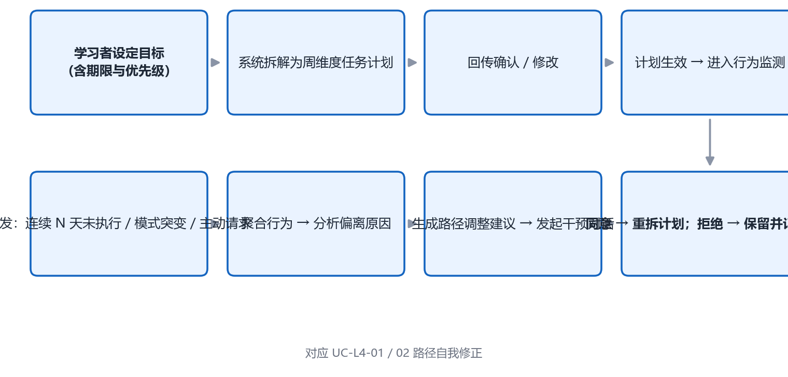
6.7 偏误诊断流程（UC-L5-01/02，L5）
- 月学习健康报告：每月定时批量分析行为数据 → 多因素归因 → 形成诊断报告（含置信度与推理链）→ 推送并询问是否采纳 → 采纳后解决方案拆为任务写入计划，与 L4 形成闭环。
- 主动归因诊断：学习者主动询问「我为什么学不好 / 总拖延」→ 系统基于行为数据链式归因 → 返回诊断 + 可执行方案 → 可选写入计划。
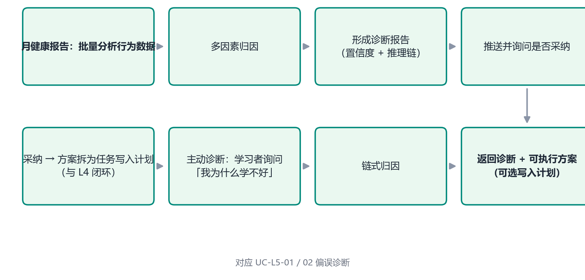
6.8 核心闭环
诊断（L5）→ 方案写入计划（L4）→ 行为监测 → 偏离干预 → 新行为数据 → 再诊断，形成「越用越懂用户」的自进化学习闭环。
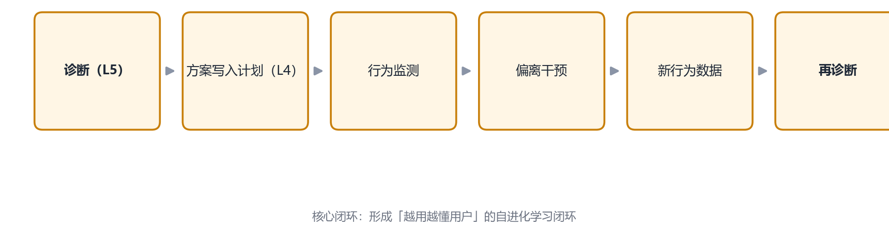
七、功能需求分析
7.1 功能架构
功能按参与角色组织为用例（Use Case），包含两大支撑能力（知识接入、推送与计划管理）与五级核心脑力能力（按智能体主动性从低到高 L1→L5）：
- L1 认知挖掘——被动响应的模糊检索定位；
- L2 冲突检测——系统主动扫描与实时检测知识矛盾；
- L3 认知助产——系统主动生成追问与简报，引导思考；
- L4 路径自我修正——监测行为偏离并主动干预重规划；
- L5 偏误诊断——归因诊断学习病根并给出方案。
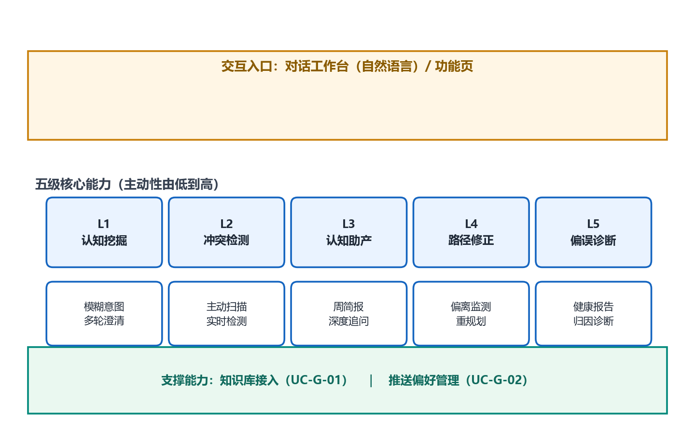
7.2 用例总览
| 用例编号 | 用例名 | 主角色 | 能力 | 优先级 |
|---|---|---|---|---|
| UC-G-01 | 知识库接入 | 学习者 / 系统 | 支撑—知识接入 | 高 |
| UC-G-02 | 主动推送偏好管理 | 学习者 | 支撑—推送管理 | 中 |
| UC-L1-01 | 模糊意图挖掘定位 | 学习者 | L1 认知挖掘 | 高 |
| UC-L2-01 | 知识冲突主动扫描 | 系统 | L2 冲突检测 | 高 |
| UC-L2-02 | 新内容实时冲突检测 | 系统 | L2 冲突检测 | 中 |
| UC-L2-03 | 冲突反馈（忽略 / 采纳） | 学习者 | L2 冲突检测 | 中 |
| UC-L3-01 | 周认知简报生成 | 系统 | L3 认知助产 | 中 |
| UC-L3-02 | 深度追问生成 | 系统 | L3 认知助产 | 中 |
| UC-L4-01 | 学习计划制定与重规划 | 学习者 / 系统 | L4 路径自我修正 | 高 |
| UC-L4-02 | 行为偏离监测与干预 | 系统 | L4 路径自我修正 | 中 |
| UC-L5-01 | 月学习健康报告 | 系统 | L5 偏误诊断 | 中 |
| UC-L5-02 | 学习归因诊断 | 学习者 / 系统 | L5 偏误诊断 | 中 |
用例与参与者的整体关系如下图：
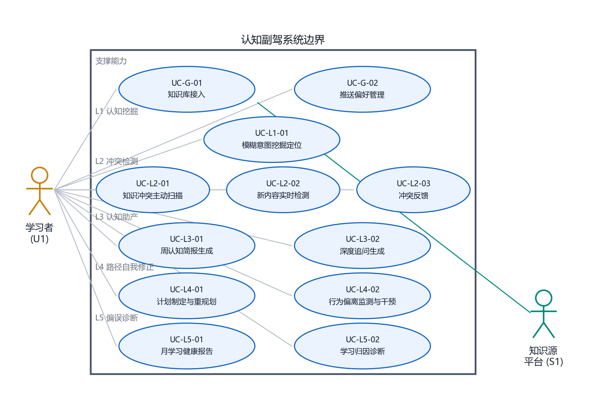
7.3 关键用例规约摘要
| 用例 | 触发条件 | 核心流程要点 | 关键扩展 / 异常 |
|---|---|---|---|
| 知识库接入 | 用户授权 | 授权→同步原文→向量化与主张提取→回传结果 | 超大条目分块；连接失败可重试不阻塞 |
| 推送偏好管理 | 用户设置 | 选择频率→保存→按偏好调度推送 | 同类型忽略 ≥3 次→自动收敛 |
| 模糊意图定位 | 模糊 / 感官化输入 | 线索→候选假设→多轮追问→定位交付+阅读历史提醒 | 唯一命中直接交付；无法回答按相似度兜底 |
| 冲突主动扫描 | 每周定时 | 扫描→主张提取→语义比对→过滤误报→候选（含置信度）→推送 | 低置信度不入库不推送 |
| 实时冲突检测 | 收藏新文章 | 入库即检测→实时推送提醒 | 同扫描流程 |
| 冲突反馈 | 存在冲突提醒 | 查看→忽略 / 采纳→记录反馈 | 同类型忽略 ≥3 次收敛 |
| 周认知简报 | 每周定时 | 主题分布分析→缺失模式识别→生成 2–3 个追问→汇总冲突→推送 | — |
| 深度追问 | 问答完成 / 新收藏后 | 获取上下文→生成 1 个衔接性深度问题→附数据依据推送 | 可承接新对话 |
| 计划制定与重规划 | 用户设定目标 | 目标→周维度拆解→确认→写入→进入监测 | 调整时进入重规划流程 |
| 偏离监测与干预 | 连续 3 天未执行 / 模式突变 / 主动请求 | 聚合行为→归因→调整建议→干预对话→同意重拆 / 拒绝保留 | 拒绝时记录偏好 |
| 月健康报告 | 每月定时 | 批量分析→多因素归因→诊断报告（置信度+推理链）→推送→询问采纳 | 采纳后写入计划闭环 |
| 归因诊断 | 用户主动询问 | 提问→链式归因→诊断+可执行方案→可写入计划 | — |
7.4 用户侧接口功能框架
| 能力 | 接口需求 |
|---|---|
| 对话 | 支持多轮自然语言交互，可跟随 Tool 调用完成动作 |
| 知识管理 | 新增 / 查询 / 导入知识条目 |
| 目标与计划 | 设定目标、查看 / 调整计划 |
| 冲突管理 | 查看冲突列表、反馈忽略 / 采纳 |
| 诊断与报告 | 查询最新诊断、健康报告 |
| 偏好设置 | 更新推送频率与其他偏好 |
| 成本查询 | 查询模型费用明细 |
7.5 需求追踪矩阵
每一条需求都必须能回溯到用例与验收项，无依据的功能不得进入范围（反向检查）：
| 需求 / 目标 | 承载用例 | 关键规则 | 验收项 |
|---|---|---|---|
| G1 碎片变认知 | UC-L1-01 | 多轮追问收敛轮数 ≤ 3 | AT-01 |
| G2 矛盾主动提醒 | UC-L2-01 / 02 / 03 | 置信度 < 0.5 丢弃；同类型忽略 ≥3 次收敛 | AT-02、AT-03 |
| G3 引导提问 | UC-L3-01 / 02 | 每周推送 2–3 个追问，附数据依据 | AT-04 |
| G4 自主纠偏 | UC-L4-01 / 02 | 连续 3 天未执行触发干预；拒绝则记录偏好 | AT-05 |
| G5 病根诊断 | UC-L5-01 / 02 | 诊断须含归因链与置信度 | AT-06 |
| 权限与数据隔离 | 全部业务用例 | 仅可操作本人资源，越权拒绝且数据不变 | AT-07 |
| 降级可用性 | 全部能力 | 向量库不可用时回退关键词检索 | AT-08 |
| 打扰控制 | UC-G-02、UC-L2-03 | 频率偏好 + 免打扰 + 自动收敛 | AT-03 |
八、数据需求分析
8.1 核心数据实体
| 实体 | 用途 | 关键属性 |
|---|---|---|
| User（用户） | 账号、偏好 | 昵称、推送频率、加密 key |
| KnowledgeItem（知识条目） | 知识库基本单位 | 标题、正文、来源、标签、阅读进度、核心主张 |
| Claim（核心主张） | 冲突比对的最小单位 | 主张文本、所属条目、向量 |
| LearningGoal（学习目标） | 目标管理 | 描述、期限、优先级、是否达成 |
| LearningPlan（学习计划） | 计划管理 | 目标关联、结构化计划内容 |
| PlanTask（计划任务） | 任务拆解 | 周次、主题、状态、关联条目 |
| CognitiveDiagnosis（诊断报告） | 偏误诊断输出 | 行为模式、归因、置信度、推理链、状态 |
| Conflict（观点冲突） | 冲突检测产物 | 条目 A/B、冲突类型、细节、建议、用户状态 |
| Conversation（会话） | 对话状态 | 状态机状态、上下文 |
| PushLog（推送日志） | 推送追溯与去重 | 类型、内容 hash、渠道、用户反馈 |
实体之间的关系如下图：用户拥有知识条目与学习目标；知识条目分解为核心主张；主张之间比对产生观点冲突；诊断结论可写入计划任务，构成闭环。
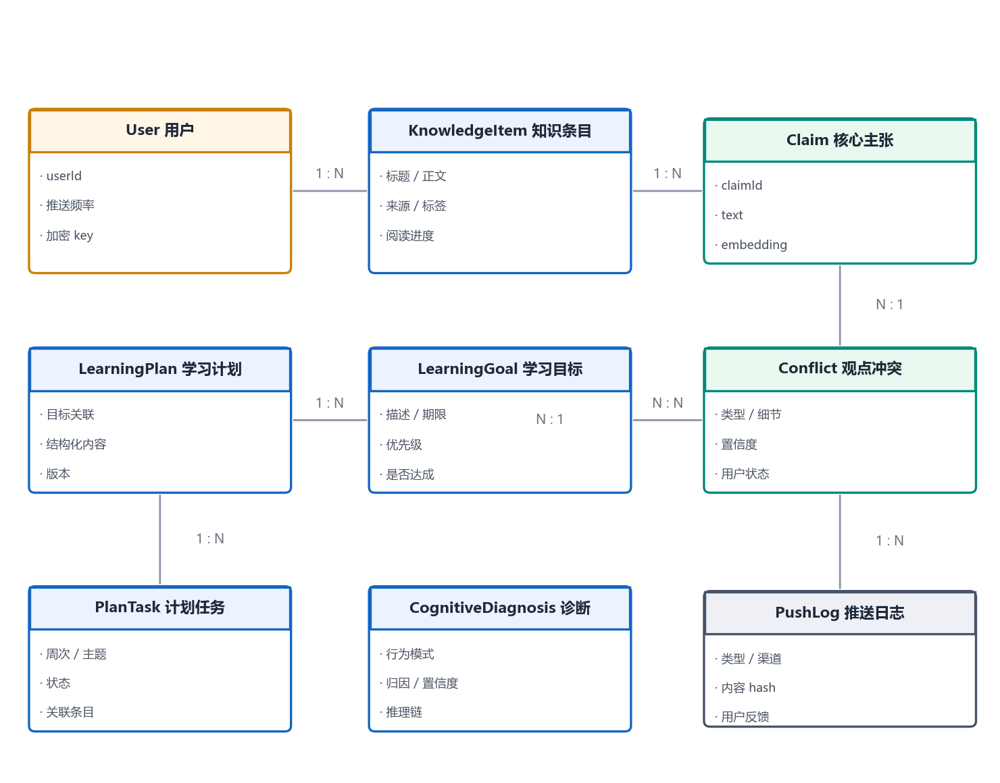
8.2 数据字典（关键字段）
| 实体 | 字段 | 类型 | 说明 |
|---|---|---|---|
| User | user_id / display_name | string | 用户标识与昵称 |
| User | push_frequency | enum | weekly / daily / quiet |
| KnowledgeItem | item_id / title / content | string / text | 主键、标题与正文 |
| KnowledgeItem | source | enum | 来源：手动录入 / 书籍摘录 / 微信读书 |
| KnowledgeItem | read_progress | float | 阅读进度 0–1 |
| KnowledgeItem | is_deleted / deleted_at | bool / datetime | 软删除标记，不物理删除 |
| Claim | claim_id / text | string | 主张标识与文本 |
| Claim | item_id | string | 所属知识条目（外键） |
| Conflict | conflict_id | string | 主键 |
| Conflict | claim_a_id / claim_b_id | string | 冲突双方主张（外键） |
| Conflict | conflict_type | enum | 矛盾 / 互补 / 断层 |
| Conflict | confidence | float | 置信度 0–1；< 0.5 丢弃 |
| Conflict | user_state | enum | unseen / ignored / accepted |
| Conflict | ignore_count | int | 同类型忽略计数，≥3 触发收敛 |
| LearningGoal | goal_id / description | string | 目标标识与描述 |
| LearningGoal | target_date / priority | date / int | 期限与优先级 |
| LearningPlan | plan_id / goal_id | string | 计划标识与所属目标 |
| PlanTask | task_id / week / topic / status | string / int | 任务拆解与状态 |
| CognitiveDiagnosis | pattern / root_cause | string | 行为模式与归因结论 |
| CognitiveDiagnosis | confidence / reasoning_chain | float / list | 置信度与推理链 |
| PushLog | push_type / content_hash / channel | string | 推送类型、去重哈希与渠道 |
| Conversation | conversation_id / state | string | 会话标识与状态机状态 |
8.3 数据存储策略
| 存储 | 承载数据 | 说明 |
|---|---|---|
| 关系库 | 用户 / 目标 / 计划 / 诊断 / 冲突 / 推送日志 | 事务强一致 |
| 向量索引 | 知识条目与主张的 Embedding | 语义检索 |
| 缓存 | 会话状态 / 限流 / 短期记忆 | 低延迟 |
| 对象存储 | 原文附件 / 长文快照 | 大文件 |
8.4 数据安全与生命周期
- 敏感分级：用户知识内容属敏感个人数据，加密存储、最小化收集；
- 软删除：全表软删（
is_deleted+deleted_at），避免误删不可恢复； - 生命周期：归档（不参与检索、可恢复）→ 保留期到期后物理清除（合规可擦除）；
- 追溯：推送与模型调用留痕，支持审计与成本归因。
九、非功能需求分析
9.1 性能需求
| 编号 | 指标 | 目标 |
|---|---|---|
| 性能-1 | 对话首字响应 | ≤ 3s（普通任务）；深度推理显示「思考中」占位 |
| 性能-2 | 语义检索 P95 | ≤ 500ms |
| 性能-3 | 批量扫描吞吐 | 异步执行，不阻塞在线请求 |
| 性能-4 | 周 / 月简报生成 | 后台任务完成，用户无感知等待 |
9.2 易用性需求
| 编号 | 指标 | 目标 |
|---|---|---|
| 易用-1 | 交互方式 | 纯自然语言对话，零学习成本 |
| 易用-2 | 知识接入 | 用户一次授权即可，无需额外操作 |
| 易用-3 | 打扰控制 | 推送可设频率与免打扰，避免过度打扰 |
9.3 可靠性需求
| 编号 | 指标 | 目标 |
|---|---|---|
| 可靠-1 | 模型服务容错 | DeepSeek API 异常自动重试（重试 2 次），不因单次失败中断 |
| 可靠-2 | 状态一致性 | 关键写操作走事务，计划 / 诊断采用乐观锁防覆盖 |
| 可靠-3 | 任务可靠性 | 定时任务具备失败重试与死信告警；支持断点续跑 |
| 可靠-4 | 依赖降级 | 向量库不可用时回退关键词检索，功能降级不中断 |
9.4 安全与合规需求
| 编号 | 指标 | 目标 |
|---|---|---|
| 安全-1 | 传输 | 全链路 TLS 加密 |
| 安全-2 | 存储 | 用户知识内容加密落库，最小化日志 |
| 安全-3 | 隔离 | 账号 key / 额度隔离，防越权 |
| 安全-4 | 数据使用 | 不做超越授权范围的数据使用；删除支持软删 + 合规可擦除 |
| 安全-5 | 输出校验 | 模型输出经敏感词 / 内容校验过滤 |
9.5 可扩展性与可维护性需求
| 编号 | 指标 | 目标 |
|---|---|---|
| 扩展-1 | 知识库源扩展 | 连接器插件化，新增来源不影响核心流程 |
| 扩展-2 | 能力扩展 | 五大能力独立模块，可单独增删 / 灰度 |
| 维护-1 | 可观测性 | 统一 request_id 全链路日志，成本与调用埋点齐全 |
| 维护-2 | 可配置性 | 规则 / 提示词 / 推送策略配置化热更新 |
十、可行性分析
10.1 技术可行性
- 模型能力成熟：单一依赖的 DeepSeek API 需支持工具调用、思考模式、长上下文与 Prompt 缓存，均为当前主流大模型已具备的成熟能力；统一网关封装了重试、限流、熔断与成本埋点，单点依赖风险已有工程手段缓冲，且抽象接口保留了未来替换 / 新增服务商的能力。
- 技术栈成熟：Python / FastAPI 异步服务、关系型数据库、向量检索、缓存与对象存储均为业界广泛验证的组件，语义检索、RAG 式召回为成熟工程范式。
- 架构降级保障：向量检索不可用可回退关键词检索，功能降级不中断，保证核心可用性。
10.2 经济可行性
- 成本可控机制内置：Prompt 缓存降低输入成本；成本与调用埋点齐全；用户侧提供成本查询接口，模型费用透明可核算；
- 异步化摊薄峰值：批量扫描与周 / 月简报均为后台异步任务，避开在线高峰，降低算力峰值成本；
- 单模型架构降低运维成本：相比多厂商混合编排，单一 LLM 依赖显著降低网关复杂度、联调与维护成本。
10.3 操作（用户）可行性
- 纯自然语言交互、零学习成本，目标用户无需技术背景；
- 知识接入一次授权即可，无额外操作负担；
- 推送频率可设并有免打扰与自动收敛机制，打扰风险可控。
10.4 法律与合规可行性
- 全链路 TLS 传输加密 + 落库加密，满足数据安全基线；
- 数据使用不超越授权范围，软删 + 合规可擦除满足用户数据删除权；
- 账号隔离与最小化日志降低数据泄露与滥用风险；模型输出经敏感词 / 内容校验过滤，降低生成内容风险。
10.5 主要风险与应对
| 风险 | 应对措施 |
|---|---|
| 模型 API 单点故障 / 限流 | 自动重试 2 次、限流熔断、统一网关隔离；抽象接口保留替换服务商能力 |
| 冲突检测误报导致用户流失 | 置信度阈值过滤 + 用户忽略 ≥3 次自动收敛的误报抑制机制 |
| 主动推送过度打扰 | 频率偏好 + 免打扰 + 推送日志去重 + 自动收敛 |
| 知识内容敏感泄露 | 加密存储、最小化收集、账号隔离、输出校验、审计留痕 |
十一、MVP 功能范围
11.1 范围界定原则
以「验证核心价值闭环」为原则，优先交付高优先级用例与核心闭环链路，砍掉编辑器、协作与社交化等非核心能力。
11.2 MVP 包含的功能
| 层级 | 功能 | 优先级 | 说明 |
|---|---|---|---|
| 支撑能力 | 知识库接入（UC-G-01） | 高 | 一切功能的前提，首期支持本地书籍与微信读书同步 |
| 支撑能力 | 推送偏好管理（UC-G-02） | 中 | 频率设置与打扰控制 |
| L1 | 模糊意图挖掘定位（UC-L1-01） | 高 | 核心差异化能力，直接命中「收藏即遗忘」痛点 |
| L2 | 知识冲突主动扫描（UC-L2-01） | 高 | 每周定时全量扫描 |
| L2 | 实时冲突检测（UC-L2-02） | 中 | 新收藏即检测 |
| L2 | 冲突反馈（UC-L2-03） | 中 | 忽略 / 采纳与自动收敛 |
| L3 | 周认知简报（UC-L3-01） | 中 | 每周推送追问与冲突汇总 |
| L3 | 深度追问（UC-L3-02） | 中 | 问答 / 收藏后衔接式追问 |
| L4 | 计划制定与重规划（UC-L4-01） | 高 | 目标拆解为周维度任务 |
| L4 | 偏离监测与干预（UC-L4-02） | 中 | 连续 3 天未执行触发干预 |
| L5 | 月学习健康报告（UC-L5-01） | 中 | 月度诊断与方案落地 |
| L5 | 归因诊断（UC-L5-02） | 中 | 用户主动询问式诊断 |
11.3 MVP 明确不做（首期排除）
- Web 编辑器；
- 多人协作；
- 内容创作社交化。
11.4 MVP 交付形态
- 用户端：Web 对话工作台 + 功能页（桌面端、原生 App 为后续扩展）；
- 模型层：单一 DeepSeek API 统一网关接入；
- 接口范围：对话、知识管理、目标与计划、冲突管理、诊断与报告、偏好设置、成本查询七类用户侧接口框架。
十二、预期效果
12.1 用户价值
- 从「存了」到「会用」：模糊线索即可找回内容，收藏真正转化为可调用的认知资产；
- 从「不知道」到「被提醒」：知识矛盾主动暴露，认知污染得以及时纠正；
- 从「被动接收」到「主动思考」：系统持续追问「该问没问」的问题，弥补认知盲区；
- 从「立目标」到「能达成」：计划偏离被主动干预，学习路径持续自我修正；
- 从「迷茫」到「有数」：学习问题获得基于行为数据的归因诊断与可执行方案。
12.2 量化衡量指标
| 对应目标 | 核心指标 |
|---|---|
| G1 碎片变认知 | 模糊检索一次命中率 ↑、多轮追问收敛轮数 ↓ |
| G2 矛盾主动提醒 | 冲突检测覆盖新增内容比例 ↑、误报率 ↓ |
| G3 引导提问 | 认知简报每周推送的追问数（含用户参与率） |
| G4 自主纠偏 | 行为偏离→干预→路径调整的平均时延 ↓ |
| G5 病根诊断 | 月度健康报告覆盖用户比例 ↑、诊断采纳率 ↑ |
12.3 业务与产品层面预期
- 形成「接入→挖掘→冲突→追问→纠偏→诊断」的差异化智能体能力壁垒，与传统知识管理工具形成清晰定位区隔；
- 通过五级能力独立模块化与灰度机制，支持按数据反馈逐级放量，快速迭代；
- 闭环数据（反馈、信任度量、行为数据）持续积累，形成「越用越懂用户」的产品护城河，为后续模型服务商扩展与能力升级奠定基础。
附录 A 验收标准
验收项与需求追踪矩阵一一对应，用于测试用例设计与验收判定：
| 编号 | 测试条件 | 预期结果 | 依据 |
|---|---|---|---|
| AT-01 | 输入模糊线索「橙色封面、好像是讲拖延症的」 | 系统发起追问或直接定位，收敛轮数 ≤ 3，返回内容附阅读历史 | G1 / UC-L1-01 |
| AT-02 | 冲突置信度分别为 0.49 与 0.50 | 0.49 不入库不推送；0.50 入库且可查询 | G2 / 冲突过滤规则 |
| AT-03 | 同一类型冲突累计第 3 次「忽略」 | 该类型不再出现在主动推荐中 | G2 / 收敛规则 |
| AT-04 | 知识库连续两周无新增内容 | 周简报仍按时生成，明确提示「本周无新增」而非静默失败 | G3 / UC-L3-01 |
| AT-05 | 学习计划连续 3 天未执行 | 触发干预对话，给出含预期收益的调整建议 | G4 / UC-L4-02 |
| AT-06 | 收藏 20 篇、完整读完 2 篇 | 诊断报告给出归因链（非仅完成率）与可执行方案 | G5 / UC-L5-01 |
| AT-07 | 用户乙请求修改用户甲的资源 | 拒绝（404 / 403）；甲的数据与状态保持不变 | 权限与数据隔离规则 |
| AT-08 | 向量检索服务不可用 | 自动回退关键词检索，主链路不中断，并标注降级状态 | 可靠性要求 |
附录 B 参考资料
- 《认知副驾》产品定位与五层能力梯度说明（项目内部文档）；
- GB/T 8567—2006《计算机软件文档编制规范》——软件需求规格说明章节结构参考；
- IEEE Std 830—1998《Recommended Practice for Software Requirements Specifications》——需求可验证性与追踪关系参考；
- DeepSeek 开放平台 API 文档——模型接入与计费口径依据。